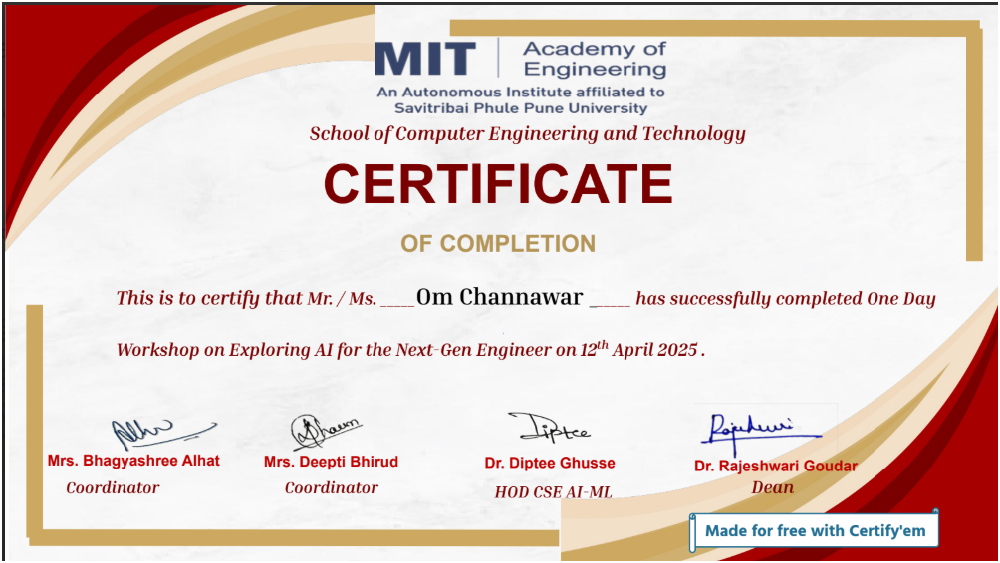
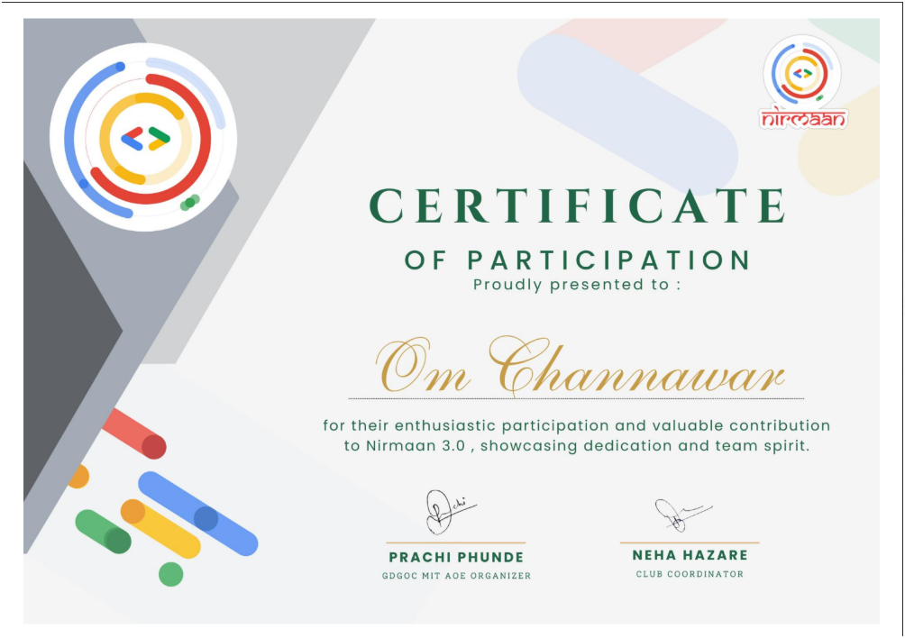

Here is a glimpse into the certifications and self-driven learning journeys I have pursued to fuel my curiosity and grow beyond academics.
Successfully participated in a hands-on workshop on Artificial Intelligence & Machine Learning organized by MIT Academy of Engineering. The session was conducted by Dr. Pallavi Mulmule and focused on practical insights into AI applications.
Participated in GDG Nirmaan 3.0 — an inter-college hackathon event that fostered innovation and rapid problem-solving through collaborative coding challenges.
